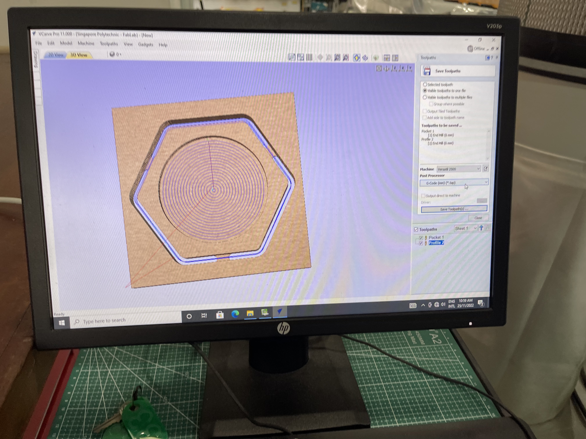

Introduction
This section of the blog talks about what I learnt about 2D Computer Controlled Machining. I learnt about the process of using a CNC router and how I used it to make a key compoenet for my project.
Competency test
Firstly, I had to take a competency test. This test required us to use the large CNC router located in T11C and create a coaster.
| Steps Taken | Explanation |
|---|---|

|
Step 1Open the DXF file containing the model you would want to cut using the router. Depending on what you are planning to cut, select what lines are pockets and what are profiles. If a line is a pocket it means that the cutter would not cut the material all the wat through. While if the line chosen is a profile, the cutter would cut through it. |
|  |
Step 2Shown in the picture on the left, you are able to see the two types of cuts made. The pocket being the one in the centre and the profile being the one on the outside. Additonally, add tabs to the workpiece to ensure that it does not fly out. Save the toothpath and export the G-code. |

|
Step 3Once the G Code is exported, you can use NC viewer on the computer to open the file. With it you can set where the X and Y axis where the piece is going to be cut which will be your reference points. |
Step 4Before you cut ensure that the X, Y and Z reference points are set in the software. To set the Z coordinate of the router, use the Z axis limit switch to mark the Z axis refernce point. |
|
Step 5Once the router is done witth your workpiece, use a chisel to hammer out the tabs. |
|
Step 6With that, your workpiece is done. Make sure to sand the surface for a clean finish. |
Final Project Fabrication: CNC Router Base Axis
There are many ways to fabricate a PCB. Below this section there is a small table showcasing the different methods of fabrication of PCBs.
| Example Image | Explanation |
|---|---|

|
To get started on coding an arduino, you will of course need an arduino. My school provided us with an Arduino Uno to use, but you can use similar arduino boards. The sceond most impoartant thing you will need is a breadboard. Although you can make these circuits without a arduino board, a breadboard will certainly help with the standardization. Lastly you will need the componets such as wires, LEDs, resistors and push button switch. |

|
To get started on coding an arduino, you will of course need an arduino. My school provided us with an Arduino Uno to use, but you can use similar arduino boards. The sceond most impoartant thing you will need is a breadboard. Although you can make these circuits without a arduino board, a breadboard will certainly help with the standardization. Lastly you will need the componets such as wires, LEDs, resistors and push button switch. |

|
To get started on coding an arduino, you will of course need an arduino. My school provided us with an Arduino Uno to use, but you can use similar arduino boards. The sceond most impoartant thing you will need is a breadboard. Although you can make these circuits without a arduino board, a breadboard will certainly help with the standardization. Lastly you will need the componets such as wires, LEDs, resistors and push button switch. |

|
To get started on coding an arduino, you will of course need an arduino. My school provided us with an Arduino Uno to use, but you can use similar arduino boards. The sceond most impoartant thing you will need is a breadboard. Although you can make these circuits without a arduino board, a breadboard will certainly help with the standardization. Lastly you will need the componets such as wires, LEDs, resistors and push button switch. |

|
To get started on coding an arduino, you will of course need an arduino. My school provided us with an Arduino Uno to use, but you can use similar arduino boards. The sceond most impoartant thing you will need is a breadboard. Although you can make these circuits without a arduino board, a breadboard will certainly help with the standardization. Lastly you will need the componets such as wires, LEDs, resistors and push button switch. |

|
To get started on coding an arduino, you will of course need an arduino. My school provided us with an Arduino Uno to use, but you can use similar arduino boards. The sceond most impoartant thing you will need is a breadboard. Although you can make these circuits without a arduino board, a breadboard will certainly help with the standardization. Lastly you will need the componets such as wires, LEDs, resistors and push button switch. |
For the assignment we will be using the maching method to do our PCB fabrication.
Electronics Design
At this point after learning about Electronic production, we have to do the electronic design for the PCB. You can view how I did the Electronics Design over here.